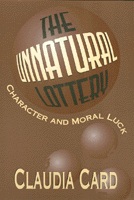

<body bgcolor="#FFFFFF" text="#000000" link="#0000FF" vlink="#CC0000" alink="#CC0000"><center><hr width="350" size="1" align="center" noshade>A philosophical defense of the concept of moral luck as mediated by gender, race, social class, and sexual passions and an exploration of its implications for responsibility<hr width="350" size="1" align="center" noshade><p><a href="https://cdcshoppingcart.uchicago.edu/Cart/ChicagoBook.aspx?ISBN=9781566394529&&PRESS=temple" target="_top">Buy this book!</a> | <a href="https://cdcshoppingcart.uchicago.edu/Cart/Cart.aspx?PRESS=temple" target="_top">View Cart</a> | <a href="https://cdcshoppingcart.uchicago.edu/Cart/Cart.aspx?PRESS=temple" target="_top">Check Out</a></p><p></p></center><!--none//--><h1>The Unnatural Lottery</h1>
<H2>Character and Moral Luck</H2>
<h3>Claudia Card</h3>
<P>cloth 1-56639-452-X $68.50, Jun 96, <FONT COLOR=#990033>Out of Stock Unavailable</FONT>
<br>paper 1-56639-453-8 $39.95, Jun 96, <FONT COLOR=#990033>Available</FONT>
<br>Electronic Book 1-43990-360-3 $39.95 <FONT COLOR=#990033>Out of Stock Unavailable</FONT>
<BR> 232 pp
5.5x8.25
</P><p>The opportunities to become a good person are not the same for everyone. Modern European ethical theory, especially Kantian ethics, assumes the same virtues are accessible to all who are capable of rational choice. Character development, however, is affected by circumstances, such as those of wealth and socially constructed categories of gender, race, and sexual orientation, which introduce factors beyond the control of individuals. Implications of these influences for morality have, since the work of Williams and Nagel in the seventies, raised questions in philosophy about the concept of moral luck. In <I>The Unnatural Lottery, </I>Claudia Card examines how luck enters into moral character and considers how some of those who are oppressed can develop responsibility.
<p>Luck is often best appreciated by those who have known relatively <I>bad </I>luck and have been unable to escape steady comparison of their lot with those of others. The author takes as her paradigms the luck of middle and lower classes of women who face violence and exploitation, of lesbians who face continuing pressure to hide or self-destruct, of culturally Christian whites who have ethnic privilege, and of adult survivors of child abuse. How have such people been affected by luck in who they are and can become, the good lives available to them, the evils they may be liable to embody? Other philosophers have explored the luck of those who begin from privileged positions and then suffer reversals of fortune. Claudia Card focuses on the more common cases of those who begin from socially disadvantaged positions, and she considers some who find their good luck troubling when its source is the unnatural lottery of social injustice.
<BR>&nbsp;<h2>Excerpt</h2><P>Excerpt available at <a href="http://www.temple.edu/tempress">www.temple.edu/tempress</a></p>
<BR>&nbsp;<h2>Contents</h2><P>
<p>Preface
<br>1. Lifting Veils of Ignorance
<br>2. Responsibility and Moral Luck
<br>3. Women's Voices and Female Character
<br>4. Caring, Justice, and Evils
<br>5. Rape Terrorism
<br>6. Gratitude and Obligation
<br>7. What Lesbians Do
<br>8. Race Consciousness
<br>Notes
<br>Index
</P><BR>&nbsp;<H2>About the Author(s)</H2>
<table><tr><td valign="top"><img src="/tempress/authors/1031_au.gif" height="90" width="75"></td><td width="100%" valign="middle"><p><B>Claudia Card </B>is Professor of Philosophy at the University of Wisconsin, Madison, with teaching affiliations in women's studies and environmental studies. She belongs to many philosophical societies, including the Midwest Society of Women in Philosophy, the Society for Lesbian and Gay Philosophy, and the North American Nietzsche Society. She serves on several editorial boards and is the philosophy book review editor for the <I>Journal of Homosexuality. </I>Her other works include <I>Feminist Ethics, </I>ed., <I>Adventures in Lesbian Philosophy, </I>ed., and <I>Lesbian Choices.</I></P></td></tr></table>
<BR><H2>Subject Categories</H2>
<p><A HREF="/tempress/philosophy.html" TARGET="_top">Philosophy and Ethics</a>
<BR><A HREF="/tempress/women.html" TARGET="_top">Women's Studies</a>
</p>
<p align="center"><a href="https://cdcshoppingcart.uchicago.edu/Cart/ChicagoBook.aspx?ISBN=9781566394529&&PRESS=temple" target="_top">Buy this book!</a> | <a href="https://cdcshoppingcart.uchicago.edu/Cart/Cart.aspx?PRESS=temple" target="_top">View Cart</a> | <a href="https://cdcshoppingcart.uchicago.edu/Cart/Cart.aspx?PRESS=temple" target="_top">Check Out</a></p><p><font face="Arial" size="1"><a href="copyright.html" onMouseOver="window.status='Web Copyright Policy';return true;" onMouseOut="window.status=''" title="Web Copyright Policy">&copy;</a> 2015 <a href="http://www.temple.edu" target="new" onMouseOver="window.status='Link to Temple University home page';return true;" onMouseOut="window.status=''" title="Link to Temple University home page">Temple University</a>. All Rights Reserved. http://www.temple.edu/tempress/titles/1031_reg.html</font></p>